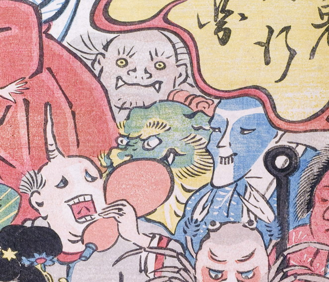

4体の化物。色が白く、一角で瓢箪を持った化物を先頭に、顔面が青く前歯の出た化物、緑色の肌で黄色のひげや眉が生えた獣のような化物、黄色い目を丸く見開き口の端に鋭い牙が覗いている化物が続く。
著作者：玉園／出典：親書誌：U426_nichibunken_0145：画本西遊記百鬼夜行ノ圖；エホンサイユウキヒャッキヤギョウノズ／日付：2009／資源識別子：U426_nichibunken_0145_0021_0000
Copyright (c)2010- International Research Center for Japanese Studies, Kyoto, Japan. All rights reserved.